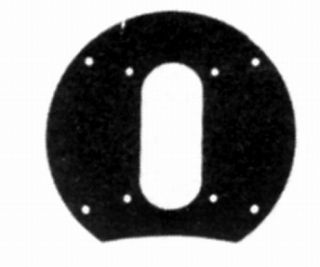
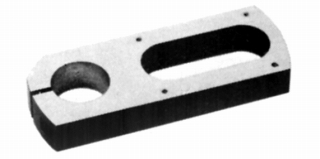
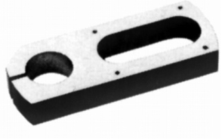
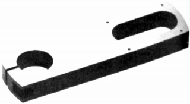
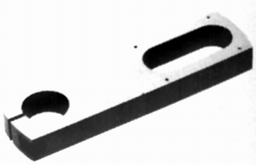
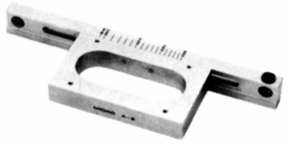
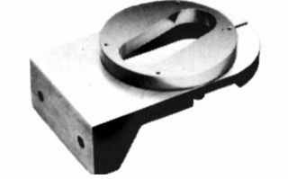
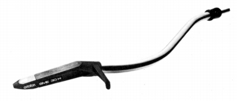

社外品のアクセサリー
内外のアームを代表する存在の為、ターンテーブルメーカー等ではSME用のアクセサリーが用意される場合があった。
�@テクニクス
SH-12P2

■価格 1,000円
■備考 3009及び3009�U用プレート
�Aマイクロ
AX-2

■価格 8,000円
■備考 同社のDDX-1000用の3009�U用アームベース
AX-2G

■価格 12,000円
■備考 同社のDDX-1000用の3009�U用アームベース。真鍮製。
AX-4

■価格 8,000円
■備考 同社のDDX-1000用の3012用アームベース。
AX-4G

■価格 12,000円
■備考 同社のDDX-1000用の3012用アームベース。真鍮製。
A-2

■価格 10,000円
■備考 同社のDD-7、6用の3009用サブアームベース。
A-6L

■価格 12,000円
■備考 同社のDD-100用の3012用サブアームベース。
なおマイクロはグレースやスタックス、テクニカなどのアーム用のボードもあったようだ。
�Bオルトフォン
SME30H

■価格 58,000円
■発電方式 MI型
■出力電圧 3mV(5cm/sec)
■針圧 1.0g
■再生周波数帯域 20-20,000Hz
■チャンネルセパレーション 25dB/1kHz
■チャンネルバランス 1.5dB(1kHz)
■コンプライアンス （水平）35×10-6cm/dyne (垂直）40×10-6cm/dyne
■負荷抵抗 47kΩ
■直流抵抗
■内部インピーダンス 600Ω
■針先 ファインライン
■自重 10.5g
■交換針 L30H(20,800円)
■発売
1979年
■販売終了 1987年頃
■備考 価格は1979年頃のもの
SME3009/Series�VまたはSeries�VS専用アームパイプ一体型
SMEのインデックスへ